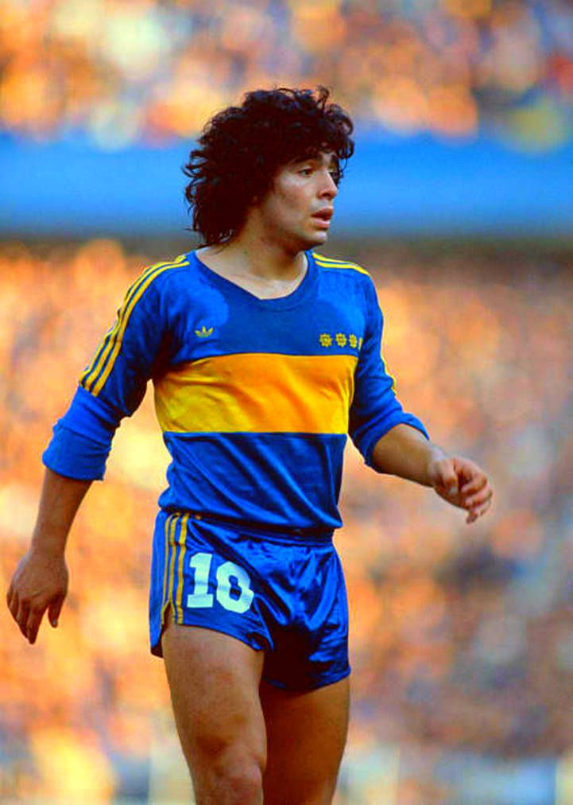
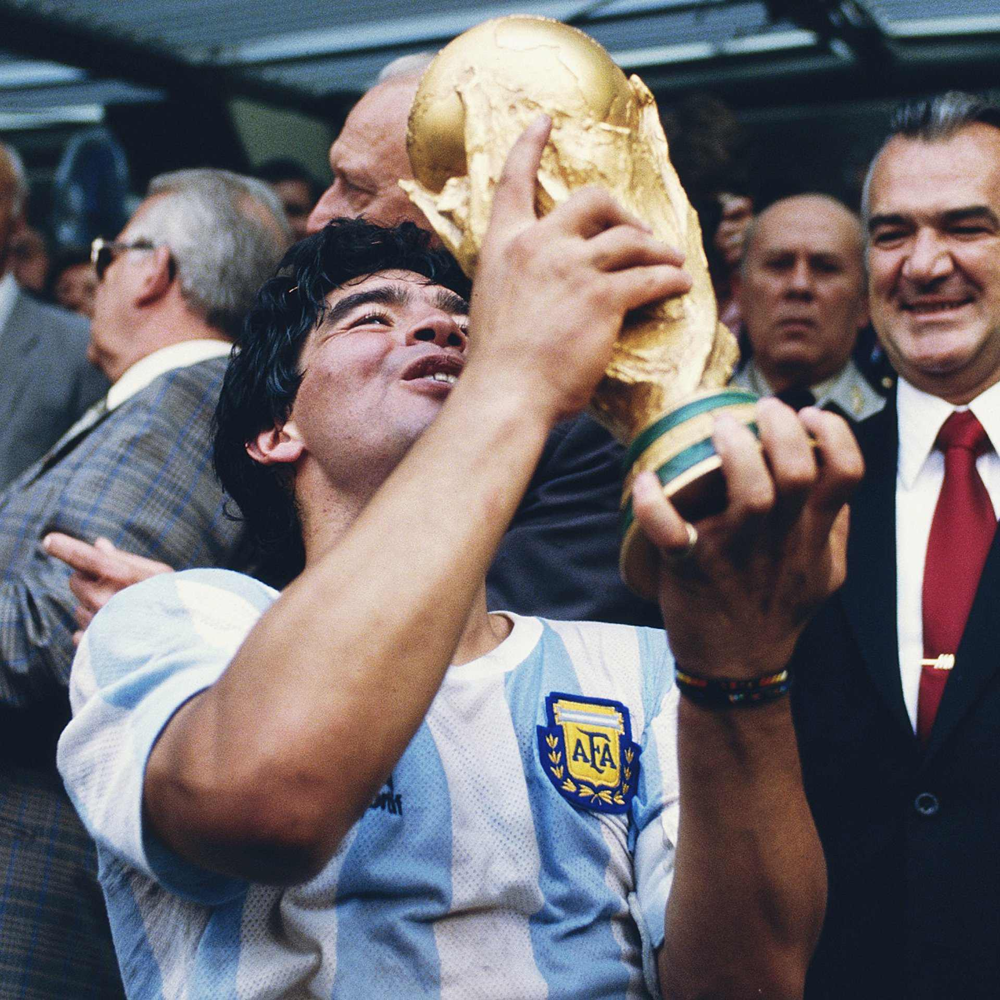

Diego Armando Maradona fue un futbolista, entrenador y presentador argentino.
¿Quien fue Diego Armando Maradona?
Criado en el barrio bonaerense de Villa Fiorito, fue fichado para las divisiones juveniles de Argentinos Juniors, donde pasó cinco temporadas. En 1981, fue traspasado a Boca Juniors. Luego transferido al Barcelona por 7,30 millones de euros y luego al Napoli de Italia por 12 millones de euros. En la etapa final de su carrera, jugó en Sevilla y Newell's Old Boys para acabar regresando a Boca Juniors en 1995 y terminar de retirarse en 1997.

Seleccion Argentina

Con la Selección Argentina, Maradona fue campeón del Mundial Juvenil de 1979, y con los mayores del Mundial de México de 1986 como capitán del equipo, en la que protagonizaría una de las actuaciones individuales más destacadas de la historia del deporte,al anotar los dos célebres goles que dieron la victoria a su selección en el partido contra Inglaterra en los cuartos de final, el primero de ellos conocido como «la mano de Dios» y el segundo como el «Gol del Siglo».En Italia 1990, Argentina casi repetiría la misma gesta, pero acabaría como subcampeón. Después de tres años de ausencia por sus problemas de dopaje, Maradona regresó para ayudar en la clasificación de Argentina para el Mundial de Estados Unidos de 1994, torneo en el que Diego volvería a dar positivo en drogas al encontrarse efedrina en sus muestras, siendo expulsado de la competición , lo que contribuyó a la posterior eliminación de Argentina en octavos de final. Esta sería su última participación a nivel selecciones como jugador.
.jpg)